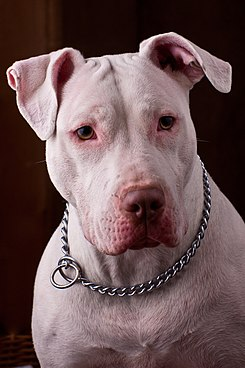

Tipos de razas de perros pitbull - con imágenes
Muchas personas tienden a ver al pitbull como una de las razas de perros más peligrosas. Sin embargo, esta creencia no es más que una visión errónea, puesto que un perro será peligroso o no en función de la educación y la atención que le preste su dueño. Además de esto, también hay quienes desconocen los tipos de razas de perros pitbull y piensan que se trata solo de un perro con las mismas características. En este artículo de un. COMO vamos a hacer un repaso por los tipos de razas de perros pitbull con fotos para que conozcas todas las que hay, así como las características que definen a cada uno de ellos, ¡te sorprenderás!
La raza pitbull: De dónde viene American pitbull terrier Staffordshire bull terrier American staffordshire terrier Bull Terrier Cobra Blue nose pitbull Red nose pitbull American bully Colby Chamuco o pitbull mexicano Pynat Spike Game ¿Son peligrosos los perros pitbull?